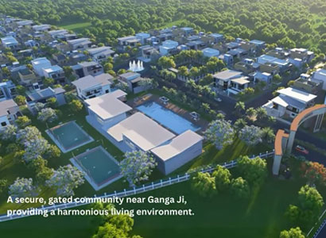

Rental Yield Potential: Can You Earn From a Second Home at Ganga County?
An exhaustive financial analysis exploring rental income models, weekend homestay demand, spiritual tourism growth, and capital appreciation for property owners at Ganga County.
The Rise of Second Home Investments in Gated Townships
For decades, real estate investment in India was synonymous with purchasing a 2BHK apartment in congested metropolitan centers like Delhi, Noida, or Gurgaon. However, shifting post-pandemic lifestyles, remote working flexibility, and soaring urban pollution have triggered a massive paradigm shift. Investors are increasingly looking beyond concrete jungles toward gated plotted developments in serene, high-growth corridors. Among these, Ganga County—developed by Atomoney Ganga County in Garhmukteshwar—has emerged as a premier destination for buyers seeking both personal sanctuary and robust financial returns.
When evaluating a second home purchase, a prudent investor's primary question is simple: "Beyond personal weekend enjoyment, can this property generate tangible, recurring rental income?" In this comprehensive financial and strategic analysis, we dissect the rental yield potential, spiritual tourism economics, infrastructure catalysts, and long-term appreciation drivers associated with owning a villa plot at Ganga County.
Visualizing the Environment & Lifestyle at Ganga County
Understanding the appeal of a rental property requires looking at the surrounding infrastructure and green ambiance. Take a look at the on-ground visual context of the project area:


Explore more site imagery on our Ganga County photo gallery page.
Four Proven Revenue Models for Your Ganga County Villa Plot
Unlike high-rise apartments that are restricted to long-term monthly leasing, a custom-built independent villa or cottage on a plotted land parcel at Ganga County unlocks multiple streams of income:
1. Weekend Homestay & Vacation Rental Model
Garhmukteshwar is a prominent spiritual and leisure getaway located right on the banks of the holy Ganga river. Urban families from Delhi, Noida, Ghaziabad, and Meerut frequently seek peaceful weekend retreats away from city noise. By constructing a modern 2-3 BHK villa on your plot, you can list it on platforms like Airbnb and Booking.com as a premium spiritual/nature homestay, commanding high per-night tariffs during weekends and festive seasons like Kartik Poornima.
2. Spiritual & Pilgrimage Tourism Lodging
Millions of devotees visit Brijghat and Garhmukteshwar annually for holy dips, rituals, and ancestral ceremonies. High-net-worth pilgrims and joint families frequently seek hygienic, secure, fully-furnished independent villa accommodations rather than crowded commercial hotels. A second home at Ganga County provides the exact upscale, tranquil alternative this demographic demands.
3. Long-Term Residential Leasing for Professionals
With rapid industrial and logistical expansion along the NH-9 corridor and the upcoming Ganga Expressway, educationalists, corporate executives, and government officials posted in the region constantly seek premium gated community housing. Gated townships offering 3-tier security and modern amenities command the highest rental values in the micro-market.
4. Corporate Retreat & Wellness Stays
As remote work and corporate offsites grow, tech companies and creative agencies in NCR regularly look for peaceful suburban villas for team brainstorming sessions and wellness retreats. A well-designed property here can easily cater to boutique corporate rentals.
Video Walkthrough: Understanding Location and Growth
Watch these official project videos to evaluate the scale, connectivity, and development status of Ganga County:
Financial Comparison: Plotted Township vs. Metro Apartments
How does investing in a plotted second home compare against traditional metro apartment investments in terms of rental yield and capital gains? Let's analyze:
| Investment Parameter | Ganga County Gated Villa Plot | Metro High-Rise Apartment |
|---|---|---|
| Initial Capital Outlay | Affordable ticket size with high land value | Extremely high entry cost |
| Asset Depreciation | Zero depreciation (Land appreciates over time) | Building structure depreciates over 15-20 years |
| Rental Income Flexibility | High nightly rates via weekend homestays & spiritual tourism | Fixed monthly rent, restricted by apartment association bylaws |
| Capital Appreciation | Rapid appreciation driven by Expressway & NH-9 expansion | Slower appreciation due to saturated micro-market supply |
| Customization & Expansion | Full freedom to build multi-story villas as demand grows | Zero structural control over exterior or layout |
Core Growth Catalysts Boosting Rental Yield in Garhmukteshwar
Rental yield is not just a function of the property itself; it relies heavily on regional infrastructure and economic catalysts. Ganga County benefits from several major developments:
- The Ganga Expressway Corridor: This massive state highway project connects Meerut to Prayagraj, putting Garhmukteshwar at a prime economic nexus and drastically slashing travel times from western and central UP. Read more on our Ganga County highlights page.
- NH-9 Expansion: Seamless multi-lane highway connectivity allows Delhi-NCR residents to drive down to their second home in under two hours. Explore our location advantage guide.
- Spiritual Tourism Inflow: Millions visit the holy Ganga banks annually, ensuring a permanent, unseasonal demand for short-term lodging and holiday homes.
- World-Class Township Infrastructure: Features like 3-tier security, wide paved roads, underground utilities, and landscaped parks (detailed on our amenities page) make Ganga County the preferred choice for discerning tenants and guests.
Frequently Asked Questions on Rental Yield
Here are expert answers to key queries regarding rental earnings and second-home investments:
Can you earn rental income from a second home at Ganga County?
Yes, property owners can generate consistent rental revenue through weekend homestays, vacation villa rentals, spiritual tourism lodging, and long-term residential leasing as infrastructure expands.
What drives rental and capital appreciation demand in Garhmukteshwar?
Demand is driven by heavy religious tourism at Brijghat Ganga, weekend getaways from Delhi-NCR, infrastructure development along NH-9, and the upcoming Ganga Expressway.
How does investing in plots at Ganga County compare to traditional apartments?
Plotted developments offer superior land appreciation, complete architectural freedom, zero depreciation on building structures, and versatile monetization options compared to high-rise apartments.
How can I review plot pricing and available sizes?
You can check plot configurations ranging from 150 to 500 Sq. Yd. by visiting our price list page and master plan layout.
Start Your Profitable Real Estate Journey Today
Secure your high-yield villa plot at Ganga County. Connect with our investment consultants to review current pricing, master plans, and site availability.
Contact Our Investment Desk